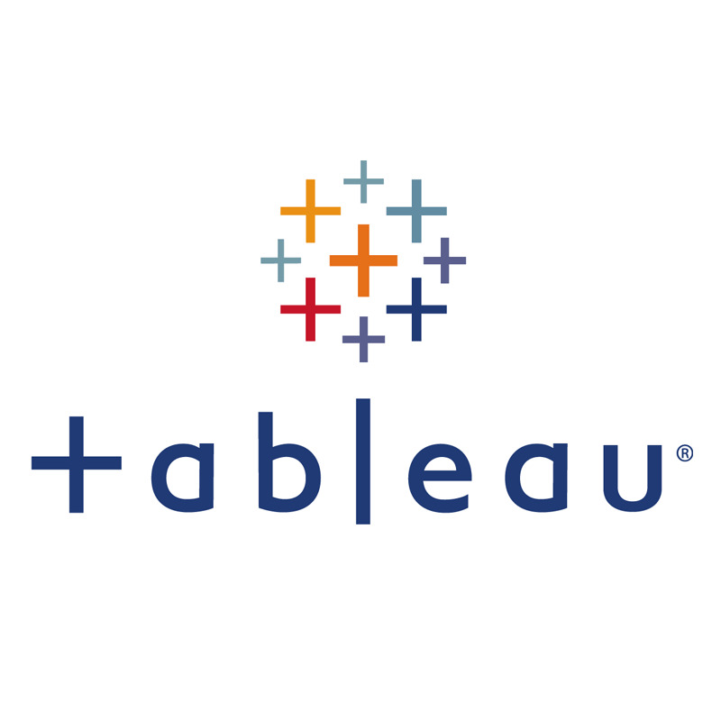

The SQL Data Cleaning project aims to improve the quality and reliability of a dataset by identifying and rectifying inconsistencies, errors, and inaccuracies within the data. This process involves various data cleaning techniques and SQL queries to ensure that the dataset is accurate, complete, and ready for analysis.
Data exploration of Spotify top 30 artists
view project

A showcase of my skills in transforming complex data into clear, actionable insights. Leveraging Tableau's powerful capabilities, I meticulously curated and visualized data to drive informed decision-making
a machine learning project using data from coursera to simulate the database from tiktok .
This project aims to create a user-friendly system that enables secure tracking, updating, and reporting of number of projects, ensuring efficient operations and improved decision-making. The system will offer features such as user authentication, advanced search and filters, real-time integration with the website, and data security measures to enhance Salifort Motors' competitiveness and customer service in the automotive industry..
a cleaning a visual representation project of the Life expectancy & socio-Economic state of different countries .
a brief project about the integration of machine learning and the creation of a database for sql .